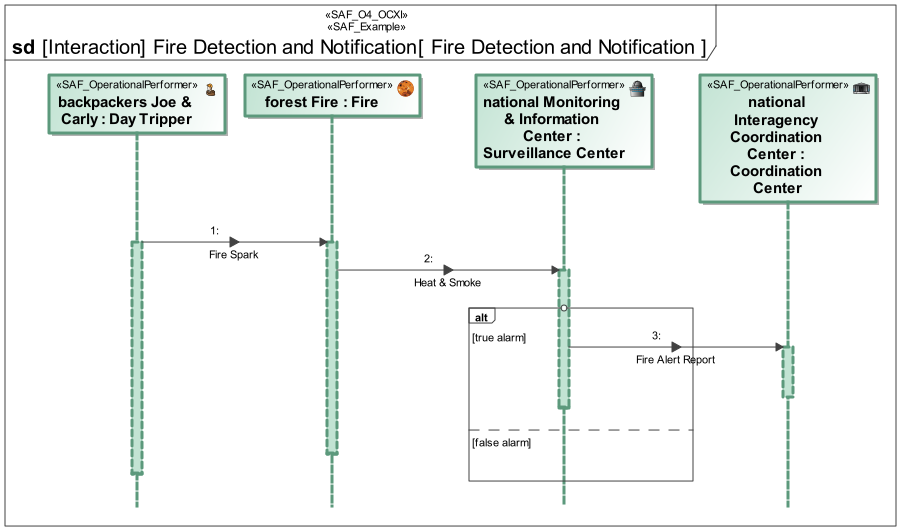
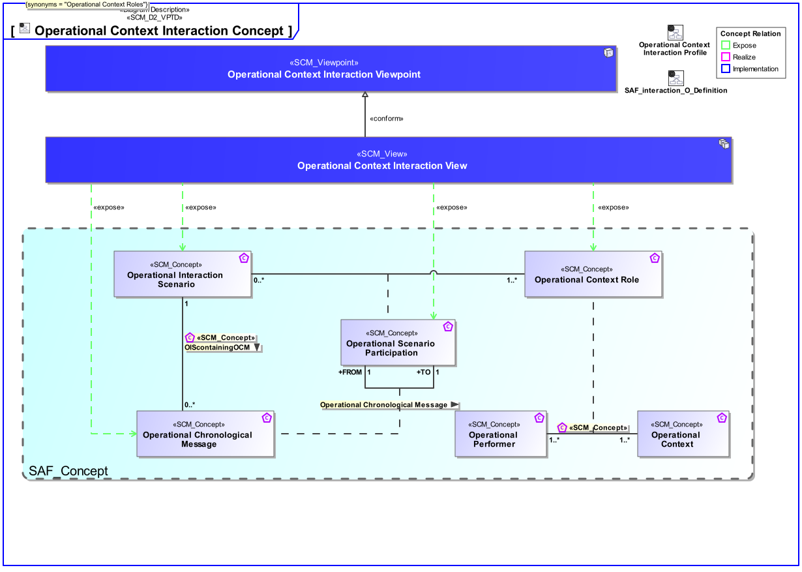
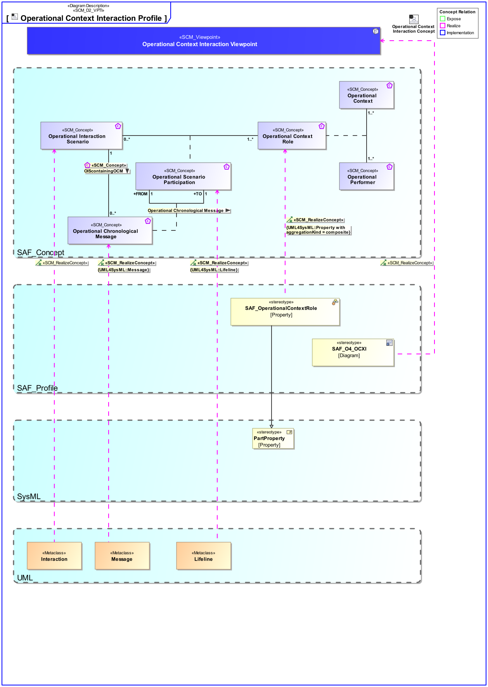

O4_OCXI Operational Context Interaction Viewpoint
| Domain | Aspect | Maturity |
|---|---|---|
| Operational | Interaction & Collaboration |

The Operational Context Interaction Viewpoint describes single threads of interaction between Operational Performers in an Operational Context on an operational domain level. Note: The Operational Interaction Viewpoint may refine an Operational Story.
The Operational Interaction Viewpoint supports the “Business or Mission Analysis Process” and the “Stakeholder Needs and Requirements Definition Process” activities of the INCOSE SYSTEMS ENGINEERING HANDBOOK 2023 [§ 2.3.5.1 § 2.3.5.2] and contributes to the definition of operational scenarios and identification of interface boundaries and interfacing systems.
A sequence diagram featuring the flow of control between Operational Performers of an Operational Context to achieve one outcome of an Operational Story. Note: This diagram depicts the sending and receiving of messages between the interacting entities called lifelines where time is represented along the vertical axis. The lifelines representatives are part properties typed by Operational Performers.
The following Stereotypes / Model Elements are used in the Viewpoint:
The Diagram shows the concepts exposed by the viewpoint, and related concepts if necessary.

| Concept | Documentation |
|---|---|
| Operational Context Role | An Operational Context Role represents a participant in an Operational context. It is interacting with other roles of the given Operational Context. Specific characteristics and features or, in case of persons or organizational units, knowledge and skills are assigned to a role necessary for the execution of the performed Operational Processes. |
| Operational Chronological Message | Ordered sequential occurrence of exchanges between Operational Interaction Scenario Participants. |
| Operational Interaction Scenario | Ordered sequence of exchanges of information, energy, or material between Operational Interaction Scenario Participants. |
| Operational Scenario Participation | Specifies the fact that an Operational Context Role participates in an Operational Interaction Scenario. |
The Diagram shows the implementation of exposed concepts.

| Concept | Realization |
|---|---|
| Operational Context Role | SAF_OperationalContextRole |
| Operational Chronological Message | |
| Operational Interaction Scenario | |
| Operational Scenario Participation |